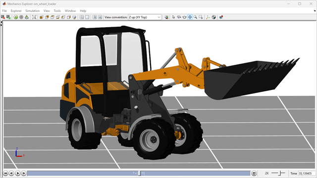

Wheel Loader Design with Simscape™

This repository contains models and code to help engineers design wheel loaders.
- Early-stage physical design is supported by calculating ratios for geartrains and hydrostatic transmissions to achieve desired speed ranges.
- Integrated testing of physical system and controller is supported by a hydromechanical model of the CVT, powertrain, and linkage.
Complete Wheel Loader Model
- Wheel Loader with Power Split CVT: Model, Documentation
CVT Test Models
- Hydromechanical Power Split CVT: Model, Documentation
- Hydromechanical Power Split CVT with Engine: Model, Documentation
- Power Split CVT with Four Speed Ranges (Multibody): Model, Documentation
- Power Split Planetary Gear (Multibody): Model, Documentation
Vehicle, Linkage, and Steering Models
- Wheel Loader Chassis, Drivetrain, and Linkage: Model, Documentation
- Wheel Loader Linkage: Model, Documentation
- Wheel Loader Steering: Model, Documentation
Driveline Test Models
- Differential Front: Model, Documentation
- Differential Rear: Model, Documentation
- Axle Front: Model, Documentation
- Axle Rear: Model, Documentation
- Driveline Joint: Model, Documentation
- Planetary Gear Wheel Hub: Model, Documentation
Workflows
- Power Split CVT Design: Documentation, MATLAB App
- Terrain Definition from STL: Documentation
- Tire Point Cloud from STL: Documentation